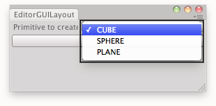

EditorGUILayout.EnumPopup
public static Enum EnumPopup(Enum selected,
params GUILayoutOption[] options);
public static Enum EnumPopup(string label,
Enum selected,
params GUILayoutOption[] options);
public static Enum EnumPopup(string label,
Enum selected,
GUIStyle style,
params GUILayoutOption[] options);
public static Enum EnumPopup(GUIContent label,
Enum selected,
GUIStyle style,
params GUILayoutOption[] options);
public static Enum EnumPopup(GUIContent label,
Enum selected,
Func<Enum,bool> checkEnabled,
bool includeObsolete,
params GUILayoutOption[] options);
public static Enum EnumPopup(GUIContent label,
Enum selected,
Func<Enum,bool> checkEnabled,
bool includeObsolete,
GUIStyle style,
params GUILayoutOption[] options);
Parameters
| label | Optional label in front of the field. | |
| selected | The enum option the field shows. | |
| style | Optional GUIStyle. | |
| options | An optional list of layout options that specify extra layout properties. Any values passed in here will override settings defined by the style.See Also: GUILayout.Width, GUILayout.Height, GUILayout.MinWidth, GUILayout.MaxWidth, GUILayout.MinHeight, GUILayout.MaxHeight, GUILayout.ExpandWidth, GUILayout.ExpandHeight. | |
| includeObsolete | Set to true to include Enum values with ObsoleteAttribute. Set to false to exclude Enum values with ObsoleteAttribute. | |
| checkEnabled | Method called for each Enum value displayed. The specified method should return true if the option can be selected, false otherwise. |
Returns
Enum The enum option that has been selected by the user.
Description 描述
Make an enum popup selection field.
Takes the currently selected enum value as a parameter and returns the enum value selected by the user.

Creates a primitive selected by the user.
using UnityEditor; using UnityEngine; using System.Collections;
// Creates an instance of a primitive depending on the option selected by the user.
public enum OPTIONS { CUBE = 0, SPHERE = 1, PLANE = 2 }
public class EditorGUILayoutEnumPopup : EditorWindow { public OPTIONS op; [MenuItem("Examples/Editor GUILayout Enum Popup usage")] static void Init() { UnityEditor.EditorWindow window = GetWindow(typeof(EditorGUILayoutEnumPopup)); window.Show(); }
void OnGUI() { op = (OPTIONS)EditorGUILayout.EnumPopup("Primitive to create:", op); if (GUILayout.Button("Create")) InstantiatePrimitive(op); }
void InstantiatePrimitive(OPTIONS op) { switch (op) { case OPTIONS.CUBE: GameObject cube = GameObject.CreatePrimitive(PrimitiveType.Cube); cube.transform.position = Vector3.zero; break; case OPTIONS.SPHERE: GameObject sphere = GameObject.CreatePrimitive(PrimitiveType.Sphere); sphere.transform.position = Vector3.zero; break; case OPTIONS.PLANE: GameObject plane = GameObject.CreatePrimitive(PrimitiveType.Plane); plane.transform.position = Vector3.zero; break; default: Debug.LogError("Unrecognized Option"); break; } } }